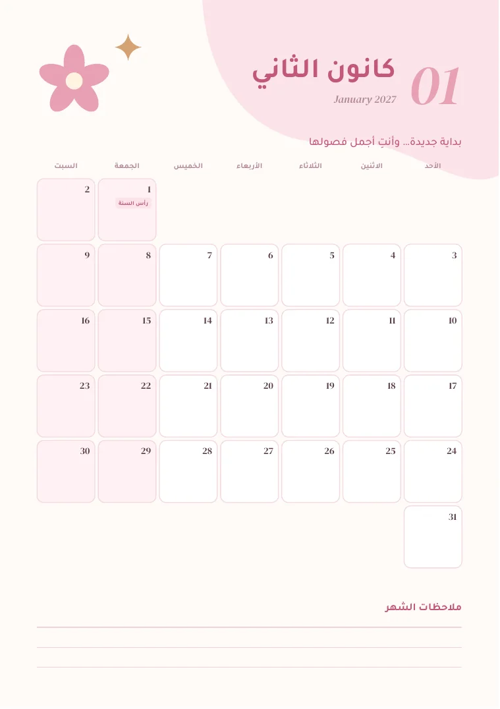

منتج خاص / أجندة
أجندة 2027:
عامٌ يشبهني.
«عامٌ يشبهني» — My Planner 2027
- النوع
- منتج خاص بي — أجندة سنوية
- المقاس
- A5، 86 صفحة
- اللغة
- العربية، مع عناوين فرعية صغيرة بالإنجليزية
- دوري
- الفكرة والتصميم كاملًا

01
نظرة عامة على المشروع
أجندة لعام 2027 صمّمتها كمنتج خاص بي. تبدأ بصفحات شخصية — معلوماتي، نظرة على العام، رؤيتي للعام — ثم لكل شهر تقويم وخطة وصفحات أسبوعية، وتنتهي بصفحات للملاحظات والرسومات ورسالة للنفس.
02
التحدي التصميمي
الأجندة تُستخدم كل يوم لسنة كاملة. صفحاتها الـ86 لازم تبقى هادئة ومتناسقة وسهلة للكتابة، وفي نفس الوقت دافئة وشخصية.
03
النهج التصميمي
- ألوان ناعمة: وردي فاتح مع الليلكي والخوخي، نجمة ذهبية رباعية، وورود تتكرر على الغلاف والصفحات الداخلية.
- العربية أولًا، والإنجليزية همسًا: كل عنوان بالعربي بخط عريض وتحته سطر إنجليزي صغير مائل، وأرقام كبيرة للأشهر والأسابيع (01، W02).
- خطاب مباشر للقارئة: الغلاف يكلّمها مباشرة — «خطّطي · احلمي · تألّقي».
- إيقاع واحد لكل شهر: صفحة افتتاح بالتقويم، ثم خطة الشهر، ثم صفحة لكل أسبوع. وتتبدّل صفحات الافتتاح بين الوردي والليلكي والخوخي.
- مساحة للكتابة: مربعات بزوايا ناعمة وسطور، مربعات اختيار للأهداف، متتبّع عادات لـ31 يومًا، دوائر للمزاج، ومتتبّع للماء في كل صفحة أسبوع.
- تقويم محلي: أسماء الأشهر كما تُستخدم في العراق (كانون الثاني، شباط…)، الأسبوع يبدأ بالأحد، وملاحظة أن المناسبات الهجرية تقريبية.
الصفحات بالترتيب
- 01الغلاف
- 02معلوماتي
- 03نظرة على العام 2027
- 04رؤيتي للعام — ستة مجالات
- 05لكل شهر: تقويم وخطة الشهر
- 06صفحات الأسابيع، من W01 إلى W53
- 07ملاحظات، وأفكار ورسومات على شبكة نقاط
- 08رسالة لنفسي — 2028
04
المخرجات النهائية
- الأجندةA5، 86 صفحة، بالعربية
- 12 قسمًا شهريًاتقويم، وخطة للشهر، وصفحات أسبوعية
- صفحات شخصيةمعلوماتي، نظرة على العام، الأهداف، الملاحظات، الرسومات، الرسالة
05
معرض المشروع




تحتاج أجندة أو دفترًا أو منتجًا مطبوعًا؟
أرسل الفكرة وعدد الصفحات والمقاس المطلوب.